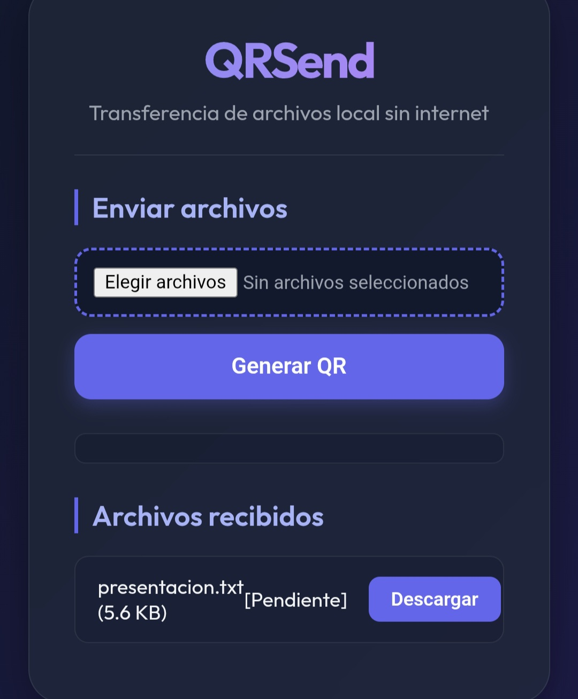

Desarrollo Frontend, Backend e infraestructura Linux.
Estudiante de Ingeniería en Informática especializado en el ciclo completo del software: interfaces web modernas (React), robustos servicios backend (Go/Python), integraciones de IoT y despliegues en servidores de producción.
Proyectos Seleccionados
Filtra mis proyectos por categoría para revisar la arquitectura técnica, código fuente y detalles operativos.

Punto de Venta e Inventarios
Aplicación web full-stack para el control de existencias en comercios. Cuenta con un frontend SPA reactivo desarrollado en React, backend API REST en Django, alertas críticas de stock mínimo e integración con lectores físicos de código de barras.

Fundación Bon Sens
Orquestación e infraestructura local para plataforma transaccional. Creación y aislamiento de servicios (Apache, PHP y Postgres) con scripts bash de arranque (`entrypoint.sh`) y scripts automáticos de inicialización de datos relacionales.

Dashboard de Telemetría Real-time
Plataforma de monitoreo web para datos de caudal hídrico. Incluye un cliente React con gráficos en tiempo real y componentes interactivos de control, comunicados mediante WebSockets bidireccionales con un servidor de streaming en Node.js.
Automatización de Caudal IoT
Dispositivo embebido basado en ESP32 con firmware en C++ para controlar una electroválvula física y caudalímetro por interrupciones de hardware. Cuenta con una aplicación móvil complementaria desarrollada nativamente en Android (Kotlin).

QRSend (Servicio LAN)
Servicio de red local portable compilado en Go en un único binario autocontenido. Implementa un servidor web y WebSocket de alta velocidad para permitir el traspaso directo de archivos en redes LAN inalámbricas, con soporte para reanudación de offsets.

Netscan Security Tool
Escáner de red modular escrito en Bash shell. Automatiza el descubrimiento de subredes locales y auditoría básica de enrutadores locales, detectando cámaras IP desprotegidas y endpoints vulnerables.
Habilidades Técnicas
Resumen de mis principales competencias operativas divididas en desarrollo full-stack, DevOps e ingeniería en sistemas embebidos.
Desarrollo Backend
- Diseño de APIs REST e integraciones complejas
- Lenguajes: Go (Golang), Python, PHP, JavaScript ES6
- Frameworks: Django REST Framework, Node.js, Express
- Bases de datos: PostgreSQL, SQLite (diseño y optimización)
- Integración de WebSockets bidireccionales en tiempo real
Desarrollo Frontend
- React (Ganchos, estados y renderizado eficiente)
- Desarrollo de Dashboards con gráficos en vivo
- Maquetación HTML5 y CSS3 semántico y responsive
- Gestión de estados globales e interacción con APIs
- Optimización del rendimiento y tiempos de carga de la UI
DevOps & Nube
- Orquestación con Docker & Docker Compose
- Aislamiento de servicios y bases de datos transaccionales
- Automatización de tareas rutinarias en Bash y Python
- Despliegue y mantenimiento continuo (VPS, Render)
- Creación y parametrización de servicios en Systemd
IoT & Embebidos
- Programación en C++ para ESP32 y Arduino
- Integración con periféricos (caudalímetros, relés, solenoides)
- Interrupciones por hardware para medición en tiempo real
- Desarrollo móvil nativo en Android con Kotlin
- Mapeo de comunicación serial inalámbrica (Bluetooth Serial)
Consola del Sistema
Consulta información ejecutando comandos en esta terminal web.
Sobre Ángel Noriega
Estudiante de Ingeniería en Informática | Desarrollador Full-Stack & DevOps. Con sede en Talca, Chile, me enfoco en crear soluciones de software sólidas tanto en el diseño de interfaces frontend intuitivas como en la programación backend y la administración de servidores Linux.
Tengo experiencia diseñando APIs RESTful, implementando sockets en tiempo real y desarrollando firmware en C++ para integraciones IoT. Mi pasión es simplificar operaciones complejas automatizando tareas y orquestando servicios seguros bajo contenedores Docker.
Enviar Mensaje
¿Tienes algún requerimiento de desarrollo web (Front/Back), integraciones de IoT o necesitas automatizar flujos de trabajo sobre Linux? Escríbeme y lo revisamos.